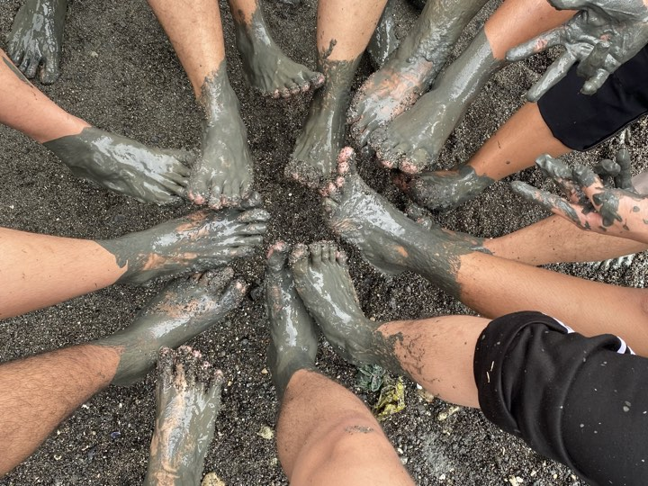

Graduation
June 20, 2023
My graduation day was an important moment that marked the result of years of hard effort and commitment. A JMC DOME KING DOME decorated out in celebration decorations and buzzing with the happy chatter of pleased friends and family welcomed the ceremony. My name was called to get your graduation, and my mother and I confidently walked across the platform in our gowns and caps. There was a lot of cheering and recognition, honoring not only your academic accomplishments but also your perseverance and personal development. It was a day of introspection, joy, and looking forward to what was ahead.
Mangrove Tree Planting
April 29,2024

Planting mangrove trees with friends is an empowering and impactful experience
that not only helps to restore and protect
the environment, but also strengthens bonds and creates lasting memories.
Mangrove trees are an important part of coastal ecosystems,
as they provide habitats for a wide variety of wildlife,
protect shorelines from erosion, and store carbon to help fight climate change.
MY PALANGGA
Dec 25 2023
I would want to take a moment to thank my beautiful partner for her unfailing love and support, especially during the most trying times. She has been my foundation of support, giving me courage, consolation, and support when I most needed it. Her endurance, compassion, and resilience in the face of adversity are incredibly admirable. She always has my back and my sincere gratitude for anything that she does. She is a blessing in my life, and I am so grateful for everything she offers to our relationship and for being herself.